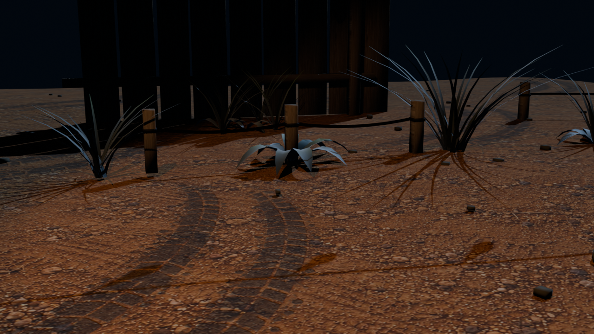

SET COMBINADO
Composición General del Patio
Integración de las 4 familias de assets: suelo compactado con huellas de neumáticos, pasto curvo con briznas finas y maleza, estacas de madera con cuerda naranja y catenaria superior de bombillas Edison.
4 módulos GLB · Iluminación PBR · Escala miniatura RC